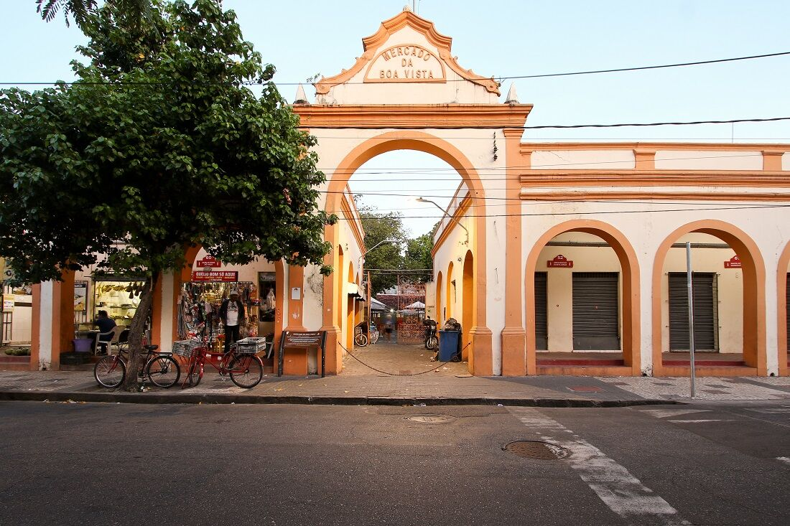
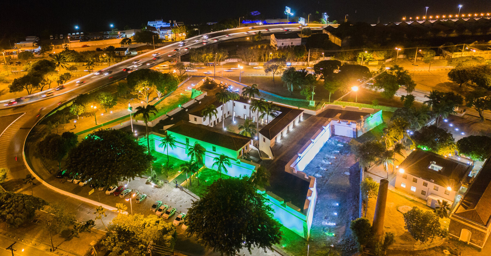

Mercado da Boa Vista
O Mercado da Boa Vista, situado no bairro de mesmo nome, é um dos lugares para conhecer em Recife que reserva um dos mercados públicos mais tradicionais da cidade, inaugurado em 1875.
Museu Cais do Sertão

O Museu Cais do Sertão é mais um dos lugares em Recife para conhecer. Estrutura moderna e interativa, sua proposta é homenagear a cultura e a história do sertão nordestino. Foi inaugurado em 2014.
Forte das Cinco Pontas
O Forte das Cinco Pontas, no bairro de São José, é o único forte remanescente da época da ocupação holandesa em Recife, construído em 1630. Ele tem esse nome porque originalmente tinha cinco baluartes, mas hoje só restam quatro.